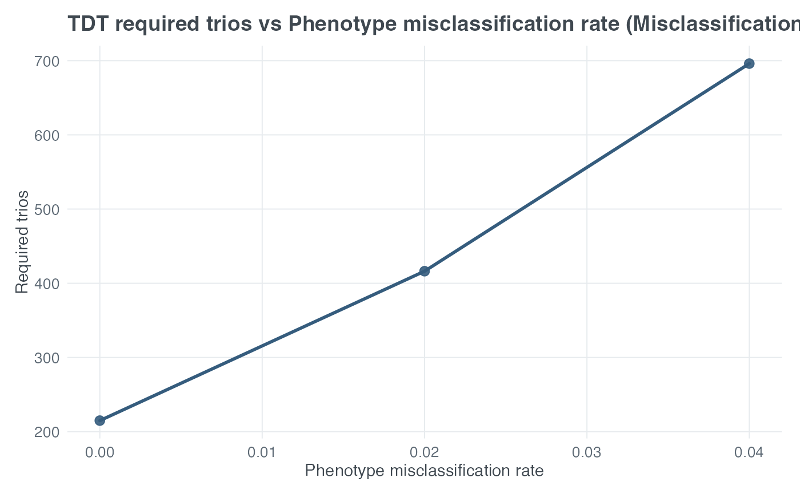

Sweeps one x-axis parameter and repeatedly calls
tdt_mssn() to plot MSSN in affected trios. The wrapper
supports both input_mode = "model_based" and
input_mode = "model_free".
Character. Parameter to vary on the x-axis.
Numeric vector of x-axis values.
One of "auto", "no_error",
"misclassification", or "heterogeneity".
One of "model_based" or "model_free".
Optional character title override.
Optional x-axis label override.
Optional y-axis label override.
Logical. If TRUE, return the data frame instead of a ggplot.
Arguments passed to tdt_mssn().
A ggplot object, or a data frame if return_data = TRUE.
scenario selects the component of the canonical TDT backend
output: "no_error", "misclassification", or
"heterogeneity". With scenario = "auto", the wrapper chooses
the scenario from x_var using the same rules as
plot_tdt_power(). This wrapper does not include a
compare-scenarios mode. x_var = "N" is not allowed because required
trios are the output; use "target_power" to sweep target power.
With input_mode = "model_based" (the default), this wrapper's
x_var choices and output are numerically identical to sweeping
tdt_mssn() directly. "pd",
"prev", "R1", "R2", and "delta_prime" are only
valid x_var choices in this mode.
With input_mode = "model_free", sweep "ET", "ENT", or
"n_trios" instead (or any of the shared "misclass_rate",
"heter_rate", "locus_het_rate", or
"pheno_error_multiplier" variables). A resolved scenario =
"heterogeneity" requires a fixed pd argument, and scenario =
"misclassification" requires fixed pd and prev arguments,
because the conditional backend needs them to apply
heter_rate/misclass_rate to the supplied ET/ENT.
Unlike tdt_mssn()'s own default of
0.01, heter_rate and misclass_rate default to
0 here in input_mode = "model_free" (unless fixed via
... or swept via x_var), so scenario = "no_error"
always works without pd/prev.
All arguments passed through ... remain fixed while x_var
is swept. The y-axis is MSSN expressed as the required number of affected
trios for the resolved scenario. When x_var = "heter_rate", it is
the heterogeneous trio fraction \(1-\pi\); target_power remains
fixed unless it is itself the swept variable.
plot_tdt_mssn(
x_var = "misclass_rate",
x_values = c(0, 0.02, 0.04),
scenario = "misclassification",
input_mode = "model_based",
target_power = 0.80,
pd = 0.30,
prev = 0.05,
R1 = 1.5,
R2 = 2.25,
alpha = 0.05,
delta_prime = 1
)
